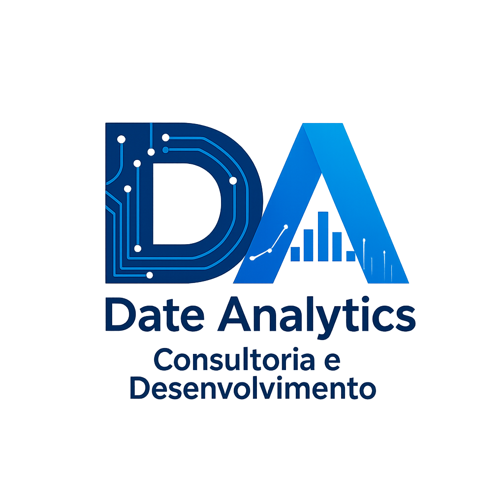

Panorama executivo • Setembro de 2026
01 / 12
IA: novos caminhos
para os negócios.
E as perspectivas que redefinem o papel de desenvolvedores e empresas.
Visão estratégica
A mudança de patamar
02 / 12
A IA deixa de ser ferramenta isolada e passa a ser uma camada operacional.
Ela conecta dados, pessoas, decisões e execução — com velocidade que transforma o desenho do negócio.
“A pergunta não é mais se usar IA. É onde ela cria vantagem competitiva, com responsabilidade.”
+ focomenos esforço em tarefas repetitivas
+ escalamais capacidade sem crescer na mesma proporção
+ contextodecisões enriquecidas por dados
+ velocidadeciclos de teste e aprendizagem menores
Da automação à inteligência operacional
Onde o valor aparece
03 / 12
Quatro frentes para transformar valor em resultado.
01 · Cliente
Experiências mais relevantes
Personalização, atendimento assistido e comunicação no momento certo.
- Jornadas inteligentes
- Atendimento 24/7 com escala
- Retenção preditiva
02 · Operação
Processos que aprendem
Fluxos conectados, menos retrabalho e maior previsibilidade.
- Automação de backoffice
- Detecção de anomalias
- Planejamento dinâmico
03 · Decisão
Gestão orientada a sinais
Síntese de dados e cenários para decidir com mais clareza.
- Copilotos analíticos
- Simulação de cenários
- Alertas proativos
IA aplicada ao negócio
O caminho de maturidade
04 / 12
Não é uma corrida por tecnologia. É uma evolução de capacidade organizacional.
01Assistir
IA acelera tarefas individuais: pesquisa, conteúdo, análise e código.
→
02Integrar
IA se conecta aos processos, dados e sistemas que fazem o negócio funcionar.
→
03Orquestrar
Agentes e equipes trabalham em conjunto, com governança e métricas de impacto.
A adoção precisa ser progressiva e mensurável
Priorizar com inteligência
05 / 12
Comece onde há impacto real e risco controlado.
A melhor iniciativa inicial combina dor concreta, dados acessíveis, um dono claro e uma métrica de sucesso.
Grande oportunidadeProcessos frequentes, padronizáveis e com alto custo de tempo.
Prioridade 1 Decisão aumentadaAnálises complexas que precisam de síntese, evidências e julgamento humano.
Prioridade 2 Exploração seguraPrototipagem, geração de conteúdo e descoberta interna.
Aprender Evitar no inícioUso sem dados confiáveis, sem governança ou com consequências irreversíveis.
Cautela Matriz de priorização
O papel da empresa
06 / 12
Vantagem sustentável exige mais do que um bom modelo: exige um bom sistema.
◈
Dados confiáveis
Conhecimento organizado, acesso adequado e qualidade suficiente para cada decisão.
◎
Governança ativa
Segurança, privacidade, revisão humana, transparência e responsabilidade bem definidas.
↗
Gestão da mudança
Capacitação, novos rituais e incentivos que tornam a adoção parte do trabalho.
Tecnologia + processo + pessoas
Perspectiva para desenvolvedores
07 / 12
O desenvolvedor não desaparece. Ele se torna arquiteto de alavancagem.
- Define sistemas, não apenas funcionalidades
- Valida qualidade, segurança e custo
- Traduz contexto de negócio em soluções escaláveis
- Orquestra humanos, dados, modelos e agentes
// novo foco do desenvolvimento
const impacto = build({
contexto: "negócio + usuário",
qualidade: "testável",
segurança: "por padrão",
humano: "no controle"
});
Do código à engenharia de resultados
Competências em ascensão
08 / 12
O diferencial será combinar profundidade técnica com discernimento.
Técnica
Arquitetura de IA
Integrações, avaliação, observabilidade, modelos, dados e custos operacionais.
Produto
Problema antes da solução
Descoberta, experiência do usuário e métricas que provam valor no mundo real.
Humana
Julgamento e colaboração
Pensamento crítico, comunicação e decisão ética em sistemas cada vez mais autônomos.
Aprender a aprender passa a ser competência central
Novos riscos, novas responsabilidades
09 / 12
Velocidade sem controle não é inovação. É exposição.
Privacidade
Proteger dados pessoais, sensíveis e estratégicos desde o desenho.
Confiabilidade
Avaliar respostas, reduzir erros e manter trilhas de auditoria.
Segurança
Controlar acessos, integrações, agentes e superfícies de ataque.
Responsabilidade
Definir quem decide, quem revisa e como corrigir desvios.
Governança deve habilitar — não travar — a inovação
Agenda prática
10 / 12
Um roteiro de 90 dias para sair da intenção e gerar evidência.
Mapear
Escolha 3–5 dores prioritárias, seus dados e as métricas de resultado.
Prototipar
Teste fluxos de alto valor com usuários reais e revisão humana.
Medir
Compare impacto, qualidade, risco e custo antes de escalar.
Escalar
Padronize o que funcionou: guardrails, componentes e aprendizagem.
Comece pequeno. Aprenda rápido. Escale com disciplina.
O futuro em construção
11 / 12
As empresas vencedoras serão as que transformarem IA em capacidade contínua.
Não será sobre adotar uma ferramenta. Será sobre operar, aprender e se reinventar mais rápido que o mercado.
Três perguntas para a liderança
1. Onde a IA pode multiplicar nosso melhor talento?
2. Que dados e processos precisam ficar prontos para isso?
3. Como vamos provar valor com segurança?
Estratégia é escolha + execução + aprendizagem
Mensagem final
12 / 12
IA não substitui uma boa estratégia.
Ela amplifica a capacidade de executá-la.
O próximo passo é simples: escolher uma oportunidade relevante, testar com responsabilidade e transformar evidência em escala.
A melhor hora para estruturar essa jornada é antes que ela seja imposta pela concorrência.
Comece com um problema real
Meça o impacto
Escalone o que funciona
Obrigado